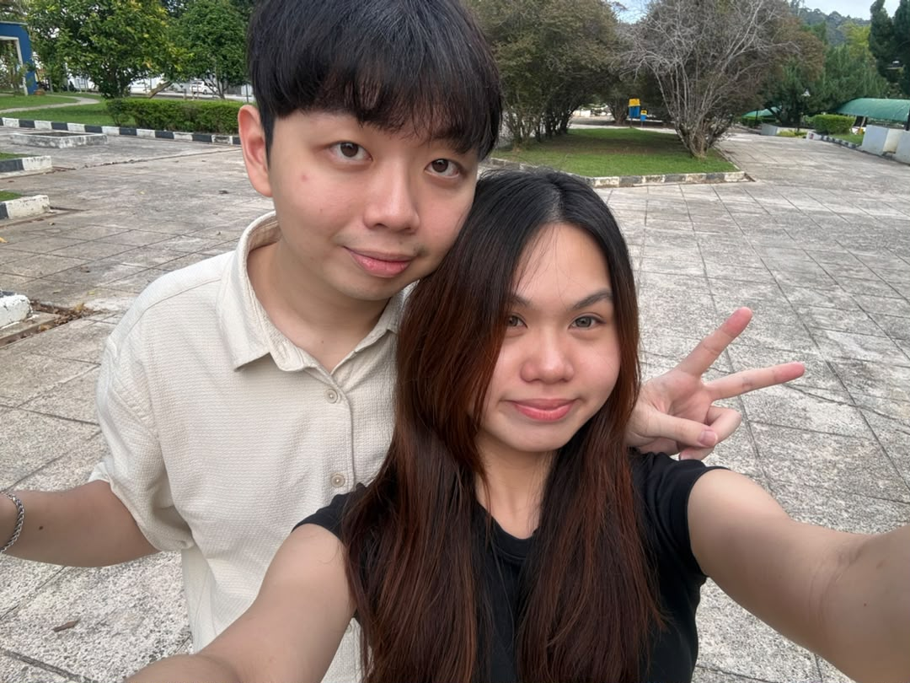

我们的回忆相册 📷
把我们一起笑过、靠近过、拥抱过的样子，好好收藏起来。
这一刻的我们，刚刚好。
1 / 9
今年没有准备很贵的礼物。
只是想把一点时间、一些回忆，还有很多很多想说的话，认真放进这里。
给那个从大学第一学期就认识，却到了最后一个学期才真正走进彼此世界的人。
其实我想了很久，今年七夕应该给你什么。
想过礼物，也想过一些特别的惊喜。但是对不起啊，as u know 我的资金有限，所以我最后还是觉得，与其买一个很贵的东西，我更想花一点时间，把那些平时没有好好说出口的话，认真地写给你。
Sem 1 就认识了，那时候不知道——原来这个人，真的可以走进我的心里。
谢谢我的宝贝，愿意被我欺负。谢谢你愿意包容我的小脾气、我的任性，还有那些偶尔不太好哄的时刻。谢谢你愿意爱着我，也谢谢你愿意为了我们，一点一点地改变。
你是一个很温暖、很贴心的人。你有担当、负责任，也有一种不是所有人都看得到的善良。你的偏爱、protective、格局和沟通能力，都是我越来越珍惜你的原因。
宝贝，你不用因为现在的困难而觉得自己不够好。人生本来就不是每一步都轻松。慢慢来，一件一件处理，一个阶段一个阶段走过去就好。
我不要求你马上变得什么都没有烦恼。我更希望你知道，在你压力大的时候，我还是会站在你这边。我们一起 step by step。钱的问题可以慢慢解决，生活也可以慢慢变好。
所以，辛苦了，我最爱的宝贝。请你不要小看自己。你远比自己想象中的还要坚强、还要厉害。
我希望我们可以一直保留一个习惯：每天都要说爱你。出门前的 kiss 和 hug，睡觉前的 kiss 和 hug。我怕在一起久了就觉得它们变得理所当然，但我想告诉你的是，我依然很珍惜你。
因为我觉得，爱不是只在特别的日子里才说。爱应该藏在每天很普通的早安、晚安、一个拥抱、一个亲吻，还有一句“我爱你”里面。
我向往的，是那种恩恩爱爱的日子一直到老。不是只想和你经历现在的大学、毕业、旅行和年轻的时候。我想象过很多很多年以后，我们已经老了，可能头发白了，可能走路慢了，但我们还是会记得出门前抱一下、睡觉前亲一下，还是会说“我爱你”。
如果可以的话，宝贝，到老我们也一样恩爱吧。 ♡
Welldone, baobei。接下来就 step by step 呗。我们一起把生活过好，一起为我们的出国旅行目标出发，一起去看更大的世界。✈︎

那时候大学水灾，我因为比赛要回 KL。你担心我一个人回去，执意载我。那一路的水真的很深、很恐怖，我们还是一起硬着头皮过去。
让我感动的，好像从来不只是“你载我回去”，而是你在害怕的时候，还是选择陪着我。
因为我的车有问题，你还是叫Alvin来帮我，自己又驾车回来。后来我先走了，你还一路追上来跟着我，因为担心我一个人在那么大的雨里不安全。
原来自己就是被这些不经意的举动，一点一点感动着。
你很自然地照顾我：我生病、经痛的时候陪着我；你出门做工回来，会记得带一个小蛋糕给我。
这些小小的事情，慢慢变成了我很确定的一件事——你是真的很疼我。
把我们一起笑过、靠近过、拥抱过的样子，好好收藏起来。
但今年七夕，
我最想送给你的，
是我花时间认真想过你的这份心意。
谢谢你出现在我的世界里。
谢谢我的宝贝愿意被我欺负，也谢谢你包容我的小脾气。
谢谢你愿意爱着我。
愿我们以后还是会每天说爱你，
一直快乐、一直幸福、一直好好的、一直是“我们”。
然后有一天，我们真的老了。
还是会觉得——
“嗯，还是你最好。”